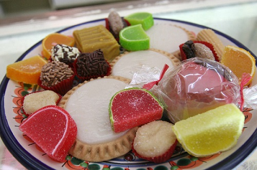
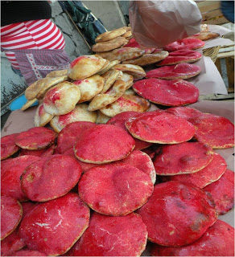

TIENDA
VENTA DE "ARBOL DE LA VIDA"
Es elaborado en cerámica policromada típica, con un significado valioso. Precio: $250 y $390 Telefono: 243 101 12 34
VENTA DE DULCES TIPICOS

Calle Iturbide, Col. Jardin, Izucar de Matamoros. Dulces desde $5 Contamos con los dulces Típicos de la región: Fruta Seca Alegria Cocada Jamoncillo Gomas Palanqueta
VENTA DE PAN DE BARRIO

Calle Galeana conocida como
"La Calle de Los Panaderos", Barrio de San Diego Chinconcuac,
Izucar de Matamoros, Puebla. Pieza : $2.50 Riquisimo pan "QUINTALERO ó PAN DE BARRIO" Telefonos: 2434346754 2431235643 2431039666 2431015154
IR A INICIO